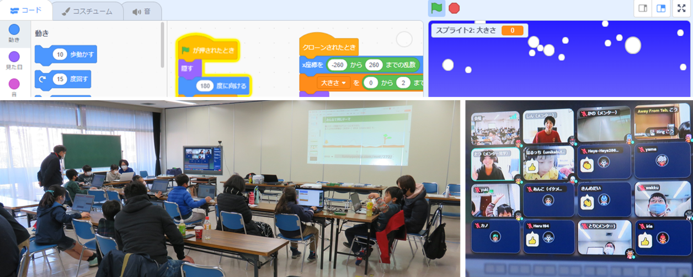

午前と午後の２回開催
第39,40回 ニンジャ25名。降雪の横ステージ と 歩行者用信号機
午前のみんなで同じテーマScratchは遠近の降雪アニメと横ステージ切り替え。午後はGPIOを操作するためのLinuxコマンドとPythonコーディング体験をするため、みんなで歩行者用信号機をシミュレーションしました。
本日の青梅Dojo出欠確認です
参加者は午前16名・午後9名のニンジャ合計25名。ご家族は保護者・妹さん達が8名以上。メンターは5名+見学2名。延べ40名以上。
本日のワークショップ１．Scratchプログラミング（初中級）
みんなで共通のテーマは、冬なので降雪と横ステージ型のプラットフォーム作り。教材は📰青梅のメンターブログを見ながら、そしてメンターが操作手順をサポートしながら制作。

本日のテーマ：横にステージ移動するアニメーションをつくろう。主人公の左右移動は［矢印キー］または［micro:bit］で。

umikabutoさんの作品例
作り方は📰こちら
午前の作品発表会
オンライン参加者も会場参加者も一緒に作品を見せあいます。CoderDojoで楽しいところは、同じテーマでもみんながつくる作品は同じものがないことです。家よりも高く積みあがった雪を穴掘りして地上に出るオープニングアニメは、そのあとのゲーム本体が楽しみ。自分でテーマを決めて制作・作品発表してくれるみんなも個性的なので、いつも様々な気付きを得ることができます。今日は最大拡大して横スクロールする技も子どもたちから教えてもらいました。
本日のワークショップ２．ラズパイ＆電子工作［歩行者用信号機］
見てください、大人も子供もみんな真剣に「歩行者用信号機のシミュレーション」に取り組んでいます。今日覚えた事は、LinuxのシェルコマンドとPythonプログラミング体験。ラズパイで大切な知識は、LEDを点灯したり、押しボタンを検知したりする方法。GPIOという名前のディレクトリのファイルに[1][0]を記入したり読んだりして、LEDと押しボタンが繋がるラズパイのGPIOを操作します。📰今日の設定手順はこちら。
会場は第１・第２会議室を繋いだ大きさ
なんとオンライン参加者を表示するディスプレイ１台とプロジェクター２台で計３台を活用しています。
次回は2月12日(日)開催でーす。
Connpassでイベント告知するので、またの参加をお待ちしています。参加申し込みはこちらのConnpassから
青梅子どもふれあいフェスタ2022［1月15日(日)］にも出店しまーす。
 CoderDojo青梅のメンターへのメールはこちら
CoderDojo青梅のメンターへのメールはこちら
😃